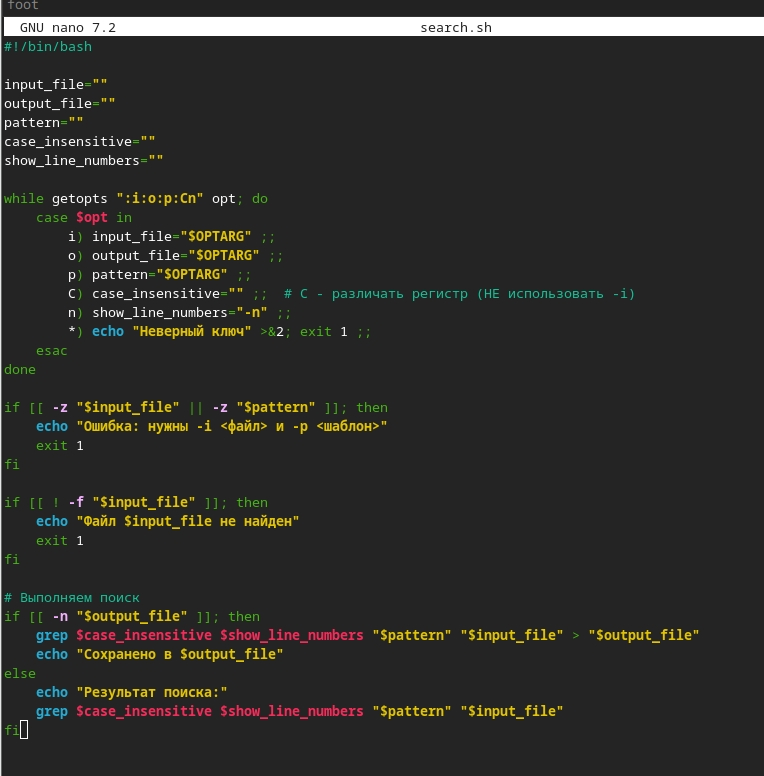
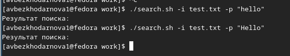
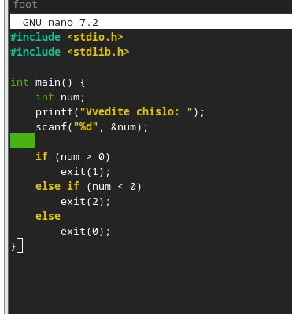
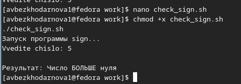
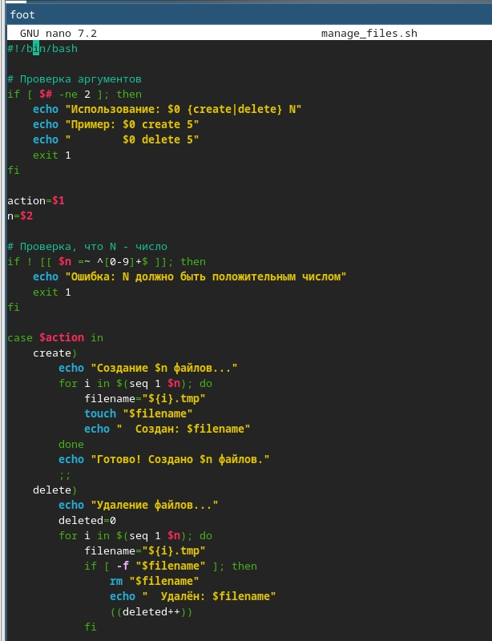
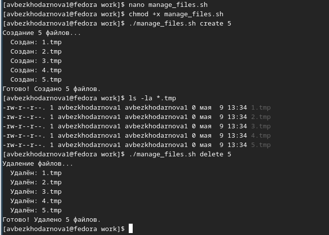
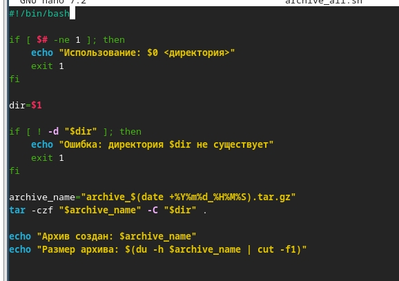
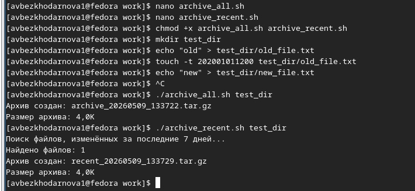

Лабораторная работа №12
Архитектура компьютеров
Безходарнова А.В.
Российский университет дружбы народов, Москва, Россия
25 апреля 2026
Информация
Докладчик
- Безходарнова Алиса Викторовна
- Студентка НКАбд-01-25
- Алiса
- Российский университет дружбы народов
- 1032253545@rudn.ru

Цель работы
Изучить основы программирования в оболочке ОС UNIX. Научится писать более сложные командные файлы с использованием логических управляющих конструкций и циклов.
Задание
- Используя команды getopts grep, написать командный файл, который анализирует командную строку с ключами: – -iinputfile — прочитать данные из указанного файла; – -ooutputfile — вывести данные в указанный файл; – -pшаблон — указать шаблон для поиска; – -C — различать большие и малые буквы; – -n — выдавать номера строк. а затем ищет в указанном файле нужные строки, определяемые ключом -p.
- Написать на языке Си программу, которая вводит число и определяет, является ли оно больше нуля, меньше нуля или равно нулю. Затем программа завершается с помощью функции exit(n), передавая информацию в о коде завершения в оболочку. Командный файл должен вызывать эту программу и, проанализировав с помощью команды $?, выдать сообщение о том, какое число было введено.
- Написать командный файл, создающий указанное число файлов, пронумерованных последовательно от 1 до 𝑁 (например 1.tmp, 2.tmp, 3.tmp,4.tmp и т.д.). Число файлов, которые необходимо создать, передаётся в аргументы командной строки. Этот же командный файл должен уметь удалять все созданные им файлы (если они существуют).
- Написать командный файл, который с помощью команды tar запаковывает в архив все файлы в указанной директории. Модифицировать его так, чтобы запаковывались только те файлы, которые были изменены менее недели тому назад (использовать команду find).
Выполнение лабораторной работы
Создаю первую программу

Делаю ее исполянемой и запускаю (рис. @fig:002).

Пишу вторую программу (Рис @fig:003).

Делаю файл исполняемым и запускаю (Рис @fig:004)

Пишу третью программу (Рис @fig:005)

И запускаю ее

Пишу четвертую программу

И запускаю ее

Вывод
В ходе данной лабораторной работы я изучила основы программирования в ОС Linux. Научилась писать более сложные командные файлы с использованием логических управляющих конструкций и циклов.
Контрольные вопросы
Каково предназначение команды getopts? Разбор аргументов командной строки в shell-скриптах.
Какое отношение метасимволы имеют к генерации имён файлов? Метасимволы (*, ?, []) используются для шаблонов при генерации списка файлов (wildcard expansion).
Какие операторы управления действиями вы знаете if, case, for, while, until, select.
Какие операторы используются для прерывания цикла? break (выход из цикла), continue (переход к следующей итерации).
Для чего нужны команды false и true Возвращают код завершения 1 (false) и 0 (true); используются в циклах и условных проверках.
Что означает строка if test -f man$s, i,s, встреченная в командном файле? Проверяет, существует ли файл с именем, составленным из переменных $s, $i и точками, с экранированием специальных символов.
- Объясните различие между конструкциями while и until. while выполняет цикл, пока условие истинно (код возврата 0); until выполняет цикл, пока условие ложно (код возврата не 0).